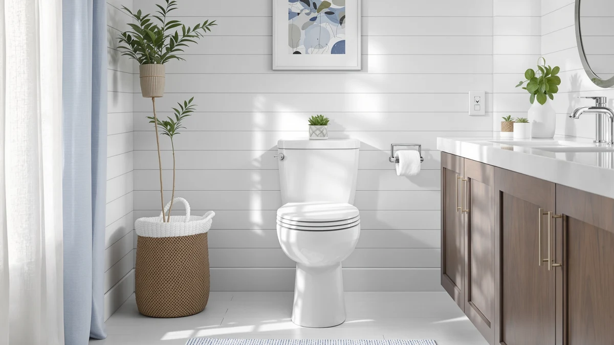

American Standard Concealed Trapway Cadet Touchless Single Flush Elongated Toilet Review (2026): Worth It?
Prices and picks verified as of November 2026. Independent, reader-supported reviews.


Quick Answer
The American Standard Concealed Trapway Cadet Touchless Single Flush Elongated Toilet pairs a motion-sensor flush with a smooth, skirted trapway, a combination none of the three alternatives below offer together. At $546.99 it costs more than the Kohler, American Standard Compact Cadet and TOTO options we compared it against, and it earns that premium mainly for buyers who want hands-free flushing and an easy-to-wipe base rather than the lowest price in this lineup.
Our pick: American Standard 2989709.020 Concealed Trapway — $546.99 Check Price on Amazon
Bottom line: our top pick is the American Standard 2989709.020 Concealed Trapway Cadet at $577.99.
Things to Know Before You Buy
- The Concealed Trapway Cadet Touchless is a one-piece, single-flush, elongated toilet with a motion-sensor flush, a feature none of the three alternatives in this comparison include.
- At $546.99, it costs more than the Kohler Santa Rosa Continuousclean ($539.77), the American Standard Compact Cadet ($539.00) and the TOTO DuoFit in-wall tank system ($526.40).
- Its skirted trapway hides the pipe beneath a smooth ceramic shell, removing the exposed grooves that collect grime on a standard two-piece toilet.
- Amazon's listing doesn't show a public star rating or review count for this ASIN, so this review doesn't cite one, and a missing rating isn't the same as a zero rating.
- If a lower price matters more than the touchless sensor, the TOTO DuoFit below saves you over $20; if you need a compact footprint, the American Standard Compact Cadet is the better fit.
This American Standard Concealed Trapway Cadet Touchless Single Flush Elongated Toilet review exists because the touchless flush sensor and skirted trapway combination keeps surfacing in searches for hands-free bathroom upgrades, without much published comparison against similarly priced rivals. At $546.99, it sits above three other one-piece and two-piece toilets we track in this price range, so the question is whether the motion-sensor flush and smooth trapway earn that premium. We went through American Standard's spec sheet, the current Amazon price and the broader market for comparable toilets to answer it, and we built this review entirely from what American Standard publishes about the toilet, current pricing and the patterns in verified owner reviews for each alternative.
The short version: this American Standard toilet is a strong pick if hands-free flushing and an easy-to-clean skirted base matter enough to you to pay more than the alternatives below. If price is the deciding factor, the TOTO DuoFit saves you $20.59, and if your bathroom is tight on space, the American Standard Compact Cadet is built specifically for that.
Why You Should Trust Us
Ilane Tall researches bathroom fixtures for Best One Piece Toilets, tracking manufacturer spec sheets, Amazon price movement and patterns across verified owner reviews for toilets like this American Standard Concealed Trapway Cadet Touchless model. We built this review entirely from public manufacturer data, current Amazon pricing and the feedback buyers leave on listing pages, not from installing or using the toilet.
We do not run a testing lab. This research compares manufacturer data, pricing and owner feedback rather than personal use of the toilet. When American Standard doesn't publish a figure, such as a rough-in distance, or Amazon doesn't show a rating for this ASIN, we say so in this review instead of filling in a number we don't have.
How We Compared
To put together this American Standard Concealed Trapway Cadet Touchless Single Flush Elongated Toilet review, we started with the manufacturer's published spec sheet and feature list, then checked the current Amazon price and cross-referenced it against three toilets in a similar price band: the Kohler Santa Rosa Continuousclean, the American Standard Compact Cadet and the TOTO DuoFit in-wall tank system. We looked for patterns in verified owner reviews on each listing, focusing on recurring comments about fit, flush performance and cleaning rather than one-off complaints.
We excluded toilets without a public spec sheet or without enough verified reviews to establish a pattern. Where American Standard doesn't publish a dimension, such as rough-in distance or bowl height, or Amazon doesn't show a review count for this ASIN, we note that the figure is unavailable rather than guessing at it.
Overview & Specs

American Standard 2989709.020 Concealed Trapway
What we like
- Motion-sensor touchless flush, a feature none of the three alternatives in this comparison include
- Skirted, concealed trapway removes the exposed grooves that collect grime on a standard two-piece toilet
- Elongated bowl shape, generally roomier than the round bowl on compact models like the American Standard Compact Cadet below
Flaws but not dealbreakers
- At $546.99, it costs more than every alternative in this comparison, including the TOTO DuoFit at $526.40
- Single-flush system only, unlike dual-flush models that let you choose a lower-volume flush for liquid waste
- Amazon's listing doesn't show a public star rating or review count for this ASIN, so we can't cite one here
| Material | — |
| Size | — |
The American Standard Concealed Trapway Cadet Touchless Single Flush Elongated Toilet pairs two design choices that usually show up separately: a motion-sensor flush and a skirted, concealed trapway. The sensor, per American Standard's product listing, triggers the flush without the user touching a handle, the kind of hygiene feature that's become more common in commercial restrooms and is now reaching home bathrooms. The concealed trapway hides the S-shaped pipe beneath a smooth ceramic shell instead of leaving it exposed on the side of the bowl, removing the grooves where dust and grime collect on a standard two-piece toilet. The elongated bowl shape rounds out the design, giving it more seating room than the compact, round-bowl toilets some manufacturers market for tight bathrooms.
On price, this American Standard model sits at the top of the four toilets in this comparison at $546.99, a $7.22 premium over the Kohler Santa Rosa Continuousclean and a $20.59 premium over the TOTO DuoFit in-wall tank system. That premium buys the touchless sensor and concealed trapway, not a dual-flush water-saving mode, since this is a single-flush design. American Standard's listing doesn't publish a rough-in distance or bowl height for this model, so measure your existing rough-in before ordering, and Amazon doesn't show a public star rating or review count for this ASIN either, so we can't cite one here.
What We Liked
The clearest strength of this American Standard Concealed Trapway Cadet Touchless Single Flush Elongated Toilet is the motion-sensor flush. None of the three alternatives in this comparison include a touchless option, and it's the kind of hygiene detail that matters most in households that specifically want to avoid touching a flush handle.
We also like the skirted, concealed trapway. Hiding the pipe beneath a smooth ceramic shell removes the exposed grooves that collect grime on a standard two-piece toilet such as the TOTO DuoFit below, and owners researching skirted designs consistently cite easier cleaning as the reason they're willing to pay more for one.
The elongated bowl is worth noting too. It's generally roomier than the round bowl on compact models like the American Standard Compact Cadet, which matters for comfort in a primary bathroom that isn't tight on space.
What Could Be Better
Price is the clearest drawback of this American Standard toilet: at $546.99, it costs more than every other model in this comparison, including $20.59 more than the TOTO DuoFit, and the single-flush system doesn't offer the water-saving dual-flush mode some buyers specifically look for.
American Standard's own listing doesn't publish a rough-in distance or bowl height for this model, which makes it harder to confirm fit before buying compared with manufacturers that list every dimension upfront. Amazon also doesn't show a public star rating or review count for this ASIN, so we can't point to a review-based track record the way we might for a longer-established listing.
A compact footprint isn't what this model is built for. The American Standard Compact Cadet below covers smaller bathrooms specifically, while this elongated Concealed Trapway Cadet Touchless is sized for a standard-size room.
Who Is It For?
This American Standard Concealed Trapway Cadet Touchless Single Flush Elongated Toilet is the right pick for buyers who want hands-free flushing and are willing to pay a premium for it. The motion sensor and skirted trapway combination isn't available on the Kohler, American Standard Compact Cadet or TOTO alternatives below, so if touchless operation is the priority, this is the one in this comparison that delivers it.
It's a weaker fit if price is your main constraint, since the TOTO DuoFit undercuts it by $20.59 without a sensor, or if your bathroom is tight on space, since the American Standard Compact Cadet below is built specifically for smaller footprints.
Alternatives to Consider
If the touchless sensor on this American Standard Concealed Trapway Cadet Touchless Single Flush Elongated Toilet doesn't justify the price for you, these three alternatives came up most often in our research into one-piece and two-piece toilets in the same price range.

Also Great
KOHLER 30812-0 Santa Rosa Continuousclean
A one-piece toilet with Kohler's Continuousclean self-cleaning glaze, priced $7.22 below the American Standard Concealed Trapway Cadet Touchless, for buyers who'd rather have a low-maintenance glaze than a touchless sensor.
$539.77
Check Price on Amazon
Also Great
American Standard 2403128.021 Compact Cadet
American Standard's own Compact Cadet, built for smaller bathrooms where the elongated Concealed Trapway Cadet Touchless above won't fit.
$539.00
Check Price on Amazon
Best Value
TOTO TWT172M DuoFit In-Wall Tank
TOTO's DuoFit in-wall tank system, the cheapest option in this comparison at $526.40, for buyers prioritizing price and a concealed-tank look over a touchless flush.
$526.40
Check Price on AmazonFrequently Asked Questions
Is the American Standard Concealed Trapway Cadet Touchless Single Flush Elongated Toilet worth $546.99?
For buyers who specifically want hands-free flushing and a smooth, skirted trapway that's easier to wipe down than an exposed one, yes, the premium over the Kohler and TOTO alternatives below reflects that touchless sensor. Buyers focused purely on price have three cheaper options in this comparison, starting with the TOTO DuoFit at $526.40.
How does the touchless flush on this American Standard toilet work?
American Standard's product listing describes a motion sensor built into the Cadet Touchless design that triggers the flush without the user touching a handle, a hygiene feature none of the three alternatives in this comparison include. This summary comes from American Standard's listed feature description and the patterns in verified owner reviews, not personal use of the toilet.
What is a concealed trapway and why does it matter?
A concealed, or skirted, trapway hides the S-shaped pipe beneath a smooth ceramic shell instead of leaving it exposed on the outside of the bowl, which removes the grooves where dust and grime collect on a standard two-piece toilet. Owners researching skirted designs consistently cite easier cleaning as the main reason to pay more for one, which is the trade-off this American Standard model makes at $546.99 against the plainer alternatives below.
Final Verdict
This American Standard Concealed Trapway Cadet Touchless Single Flush Elongated Toilet review comes down to a straightforward trade-off. American Standard's touchless model delivers hands-free flushing and a skirted, easy-to-clean trapway at $546.99, the highest price among the four toilets we compared, without a public star rating or review count to confirm a long track record. If hands-free operation and a smooth trapway matter to you, this American Standard toilet is worth the premium. Buyers who'd rather save money should look at the TOTO DuoFit above, and anyone with a tight bathroom footprint should go with the American Standard Compact Cadet instead.